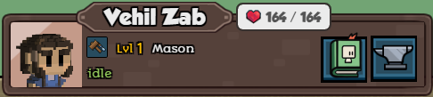
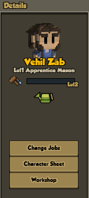

- What is a command?
- Adding commands to an entity
- Adding a command in Lua
- Enabling / disabling a command in Lua
- Anatomy of a command
What is a command?
A command is an order that the players can issue on an entity they have clicked on. For example, "Release Pet" for pets, "Move Item" for decorations, and "Workshop" for workbenches and crafters. They are managed through the commands component.
Below are some command buttons on a hearthling's unit frame (the UI bar that displays information about a hearthling): 
The citizens panel lists all commands available for the selected hearthling too, so that we can use them from there. 
It also adds the "Change Jobs" button, which isn't treated as a command, it will directly bring up the promotion UI. You can also open the promotion tree by clicking on the job icon inside the character sheet.
Adding commands to an entity
To make a command available on an entity, go to the entity's .json file, and add "stonehearth:commands" in the "components" section. Then, refer to the file or alias relevant for each command you want to add inside the "commands" array:
"stonehearth:commands" : {
"commands" : [
"stonehearth:commands:use_consumable"
]
}
If you want to create an URI for your command, add it under the "aliases" section of your manifest.
Adding a command in Lua
You can also add a command via Lua code. Some components or other Lua scripts add the commands manually like this, instead of on each JSON file:
local command_component = self._entity:add_component('stonehearth:commands')
-- add the command you wish
command_component:add_command('stonehearth:commands:place_item')
local event_data = { crafter_type = json.job_alias }
-- can also modify the command's event data
command_component:set_command_event_data(command_uri, event_data)
Enabling / disabling a command in Lua
Get the commands component and then call set_command_enabled(uri, is_enabled) on it:
local commands_component = self._entity:add_component('stonehearth:commands')
commands_component:set_command_enabled('stonehearth:commands:place_item', true)
Other functions you can call on the commands component are defined in stonehearth/components/commands/commands_component.lua.
Anatomy of a command
A command is a JSON file with "type" : "command". It has a name, an enabled/disabled status, a tooltip, an image and some other pieces of information required to display it correctly in the UI. It can have different actions to execute, as well as different arguments based on the action type.
We can find the existing commands in stonehearth/data/commands. The combat commands that appear on top of the unit frame are a bit different, they're not treated like the rest of commands (they are shown/hidden depending on whether the hearthling has a combat job). The rescue command is also called directly from the Javascript code and shown/hidden depending on the status of the hearthling.
These are the different fields we can find in commands:
- "type": "command" -- this file represents a command.
- "name" -- a custom identifier used internally. Try to keep it unique. By convention, we use lowercase and underscores (instead of spaces).
- "display_name" -- a localized name that will be shown in the tooltip when we hover over the command in the unit frame.
- "description" -- a localized description that will be shown in the tooltip for the command.
- "disabled_description" -- optional field. If we add it, the description on the tooltip will change to the one here whenever the command is disabled.
- "icon" -- the icon for the UI.
- "ordinal" -- optional field. An ordinal to show the different commands in a certain order in the UI.
- "hotkey_action" -- optional field. It's the name of the hotkey identifier for this command. If we add it to
stonehearth/data/hotkeys.jsonvia a mixinto, players will be able to bind key combos to this command in the Controls tab of the game settings. - "default_enabled" -- optional field (true by default). Whether this command should be enabled by default (some commands are enabled/disabled manually in Lua).
- "visible_to_all_players" -- optional field (false by default). With this, the command will be visible for other players in multiplayer games when they select the entity that has this command, even if the entity belongs to another player.
- "action" -- the type of action that the command has. There are two types, explained in more detail below:
- "fire_event" -- this command will fire an event that will be listened to by the UI (client side). We need to declare which event in a "event_name" field, as well as defining data in a "event_data" field (it's a table. If the event doesn't need anything passed, we should declare it empty {}).
- "call" -- this command will call a function (defined in a "function" field) with some arguments (defined in an "args" array, which can be empty if we don't need to pass any or if the only argument we need to pass is the entity that has this command).
Fire Event
One common action for a command is "fire_event". This means that the event name associated is fired when we click on the command, and the UI will pick it up in the .js files and do something with it.
For example, this is the command that we add to workbenches to show the workshop UI (we add it in Lua):
{
"type": "command",
"name": "show_workshop",
"display_name": "i18n(stonehearth:data.commands.show_workshop.display_name)",
"description": "i18n(stonehearth:data.commands.show_workshop.description)",
"disabled_description": "i18n(stonehearth:data.commands.show_workshop.disabled_description)",
"default_enabled": true,
"ordinal": 10,
"icon": "file(show_workshop.png)",
"action": "fire_event",
"event_name": "radiant_show_workshop",
"event_data": {}
}
The "radiant_show_workshop" event above is hooked up to javascript with the following code from stonehearth/ui/game/show_workshop/show_team_workshop.js:
$(document).ready(function () {
App.workshopManager.init();
// Show the crafting UI from the workshops, and from the crafter.
$(top).on("radiant_show_workshop", function (_, e) {
App.workshopManager.toggleWorkshop(e.event_data.crafter_type);
});
$(top).on("radiant_show_workshop_from_crafter", function (_, e) {
App.workshopManager.toggleWorkshop(e.event_data.crafter_type);
});
});
In this example the event data was added via Lua in the workshop component when the game initialized it for the corresponding workbench, so we don't pass any parameter in the "event_data" field from the command's JSON file. This way, the event data can be different for each workbench.
If we had wanted this command to always pass the same data for the crafter_type parameter (for example, the mason from the stonehearth mod), we wouldn't have defined it via Lua and would have instead added it like this to the command's JSON file:
"event_data": {
"crafter_type" : "stonehearth:jobs:mason"
}
Call
Another common action for a command is to call a function. For example, to use certain consumables, we have the use_consumable command:
{
"type": "command",
"name": "use_consumable",
"display_name": "i18n(stonehearth:data.commands.use_consumable.display_name)",
"description": "i18n(stonehearth:data.commands.use_consumable.description)",
"icon": "file(use_consumable.png)",
"action": "call",
"function": "stonehearth:use_consumable_on_town",
"args": [
]
}
The value for "function" is the name (preceded by the namespace of the mod plus a colon!) of a function described in the "functions" section of the manifest:
"functions" :{
"use_consumable_on_town": {
"controller": "file(call_handlers/town_call_handler.lua)",
"endpoint": "server"
}
}
In the "controller" field we define the file where the code of the use_consumable_on_town function is actually located. Normally it's in a call handler (they'll be explained in advanced sections of the guide). We also have to define if the "endpoint" is "client" or "server", depending on whether the function should be executed on the client side or on the server side.
In our command's JSON file we have the "args" array to pass arguments to the function (check the default_arrows.json and summon_titan_from_gong.json commands for examples).
 Note that, even when we leave the "args" array empty, the first argument that will be passed is always the entity from which we executed this command.
Note that, even when we leave the "args" array empty, the first argument that will be passed is always the entity from which we executed this command.
Call object
We can call a function on an object (like a service), if we add the "object" field. For example:
{
"type": "command",
"name": "restore_terrain",
"display_name": "i18n(stonehearth:data.commands.restore_terrain.display_name)",
"description": "i18n(stonehearth:data.commands.restore_terrain.description)",
"default_enabled": true,
"icon": "file(restore_terrain.png)",
"action": "call",
"function": "restore_terrain_command",
"object": "stonehearth.building",
"args": []
}
Here the code of the restore_terrain_command function (notice that is not preceded by the namespace of the mod!) is defined in the building service (stonehearth.building), which is an object instantiated by the game. Remember that the first object of the "args" array will be the entity from which we executed this command.
For calling functions on an object in this way, we must add them to the manifest in the "object_commands" section (shortened example from the stonehearth manifest):
"object_commands": {
"building": [
"restore_terrain_command"
]
}